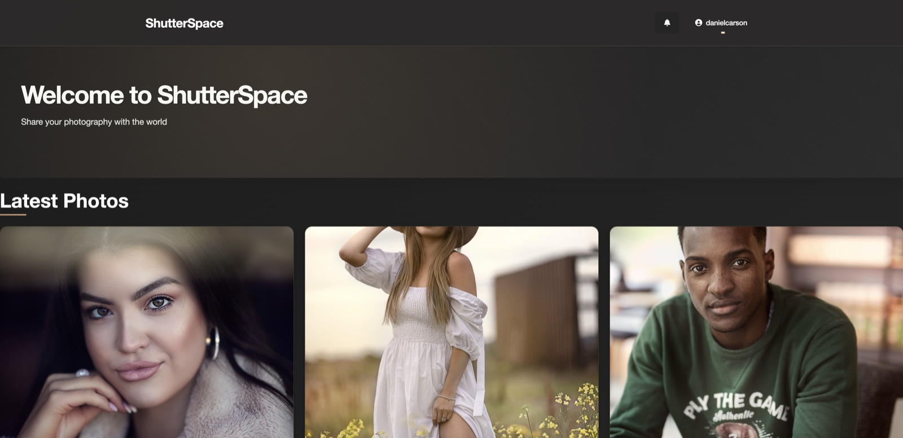

ShutterSpace
A full-stack photography portfolio platform designed for photographers to showcase their work, build a profile and connect through thoughtful community features.
- Role: Full-Stack Developer — Design & Development
- Technologies: Python, Django, PostgreSQL, Cloudinary, Heroku, HTML, CSS and JavaScript

Project Links
Project Overview
ShutterSpace provides a focused alternative to general-purpose social platforms: a clean, responsive space that gives photography the visual priority. It combines professional presentation with community tools so photographers can publish work and engage with other creators.
Key Features
- Photographer profiles with avatars, hero images, biographies and links
- Photo uploads and delivery through Cloudinary
- Likes, comments and notifications to encourage community interaction
- Public and private visibility controls for portfolio management
- Responsive layouts designed for desktop, tablet and mobile browsing
Technical Highlights
- Django ORM models for profiles, photos, comments, likes and notifications
- PostgreSQL in production with environment-based configuration
- Cloudinary media hosting for image optimisation and scalable delivery
- Heroku deployment for the live application